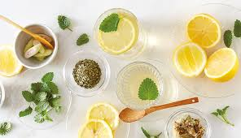

Recetas Caseras
Preparar remedios caseros con plantas medicinales es sencillo y eficaz. Estas recetas se han transmitido a lo largo de generaciones, aprovechando las propiedades curativas de las plantas para tratar diversas dolencias de forma natural.
- Jarabe de Miel y Jengibre: Ideal para aliviar la tos y los síntomas del resfriado. Combina las propiedades antiinflamatorias del jengibre con los beneficios antibacterianos de la miel.
- Tisana de Manzanilla: Una infusión relajante que ayuda a calmar el estrés y mejorar la digestión.
- Ungüento de Caléndula: Utilizado para tratar heridas leves y quemaduras, gracias a sus propiedades cicatrizantes y antiinflamatorias.
- Cataplasma de Árnica: Alivia dolores musculares y reduce la inflamación en esguinces y contusiones.
Tabla de Preparaciones
A continuación se presenta una tabla con algunas preparaciones caseras y sus ingredientes clave:
| Preparación | Ingredientes |
|---|---|
| Jarabe de Jengibre: | Jengibre fresco, miel, limón. |
| Tisana de Manzanilla: | Flores de manzanilla, agua caliente. |
| Ungüento de Caléndula: | Flores de caléndula, cera de abejas, aceite de oliva. |
| Cataplasma de Árnica: | Hojas de árnica, agua, tela de algodón. |